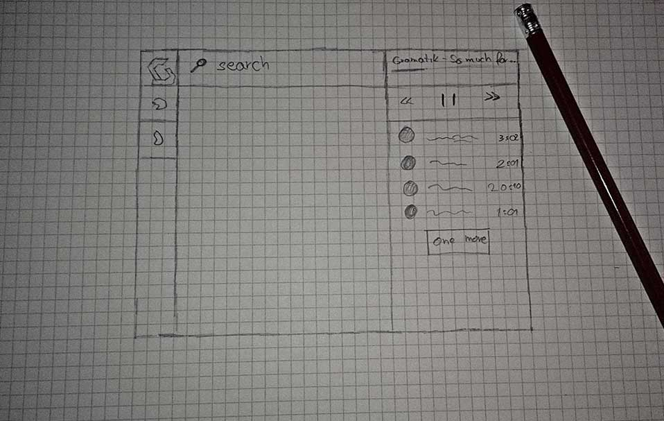
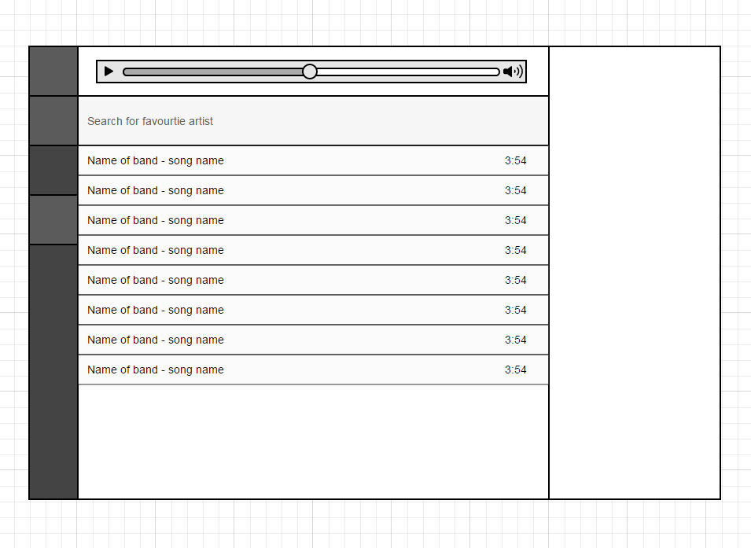
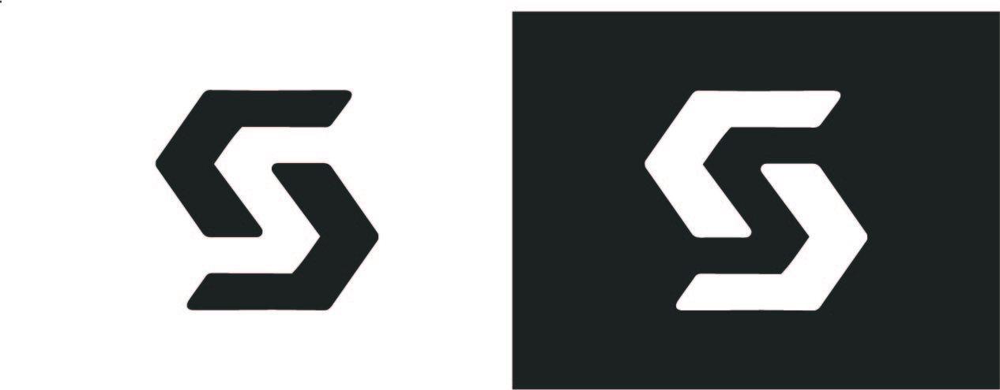
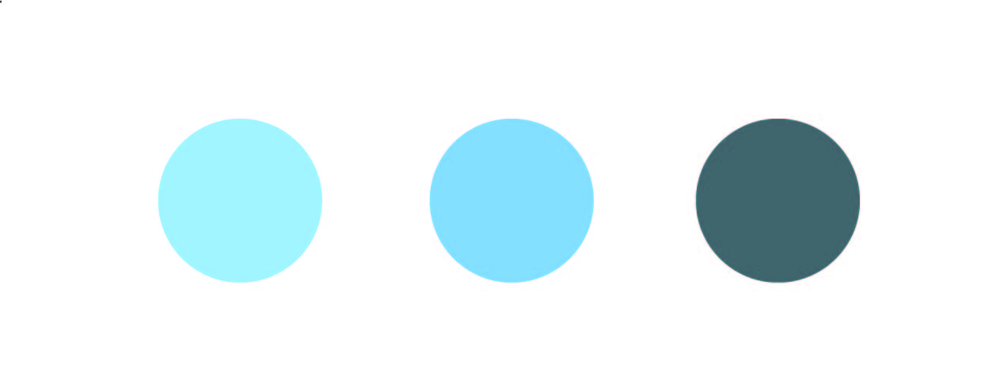
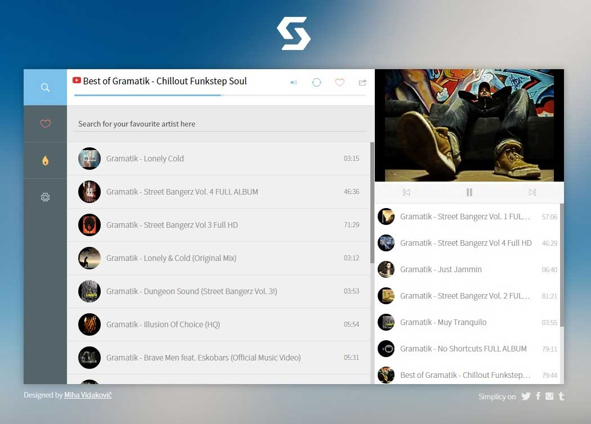

With colleague of mine we had this idea of kick ass music player for a long time in back of our heads. We are both music enthusiasts, we both "hated" almost all music streaming web services, so we always craved for our own app with all desired features.
Simplicy is web service that allows you to search for your favourite bands and artists. It allows you to make your own playists which you can share it with friends. If sound is performed live you can watch video alongside with the music.
I was mainly responsible for design and feel of the web site. I did the wireframing and designing and almost all front-end work.
I was put in front of a big challenge. Out there, there are tons of similiar web services, so I wanted Simplicy would be different. I don't like player to be in a full-screen mode, I have to move my mouse like a maniac just to change the song or lower the volume down. I love blurry background images to be rotated behind player, so I started to making breif mockups in my head.
As I imagened the app will be very slick and simple. At the end of crafting Simplcy you'll see this was early stage sketch.
This was one quick, bad wireframe so I could determined main color I will use.
After a lots of vinyls created in Illustrator I decided I'll not use mainstream vinyl cover for logo. I went little abstract.
In a few hours I managed to create this negative space S logo. No matter which color combination I will use, S can be still seen.
I choose light blue for the main color because it gives freshnes and lightness of the site.
This is the final version of Simplicy web app used today. I think I achieve my main point stated in The Challenge which is "simplyness". I can change song in just a second, no need to move my mouse across all my screen. With the programmer we've worked on speed of our new application. Everyting is pre-loaded when you visit the webpage, shearch is fast as possible, you can make playlists, like songs and there is no lag. I think I achieved all my requirements with this design.
Previous project
Next project